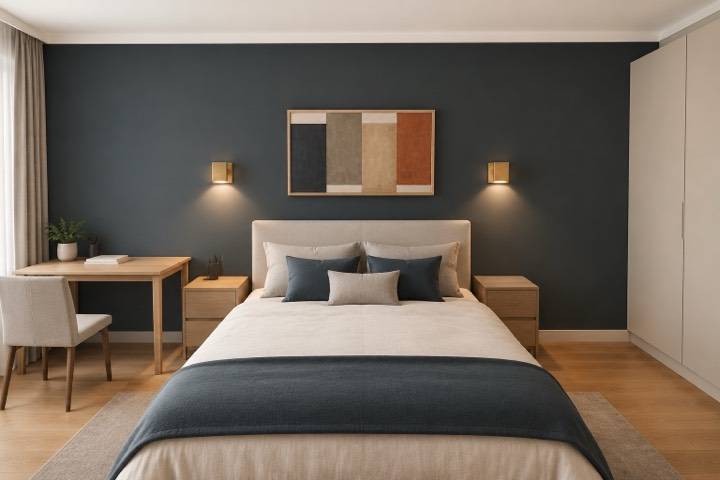

Живой пример
Проект в этом стиле: трёхкомнатная квартира
Квартира 3К · Warm Contemporary: 94 листа рабочей документации и альбом для заказчика с визуализацией каждой стены — открыты целиком. Направление проекта — «современный».


